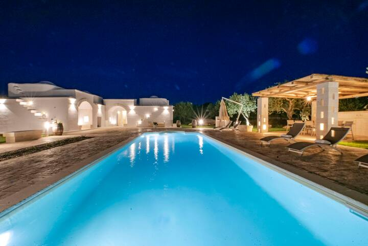
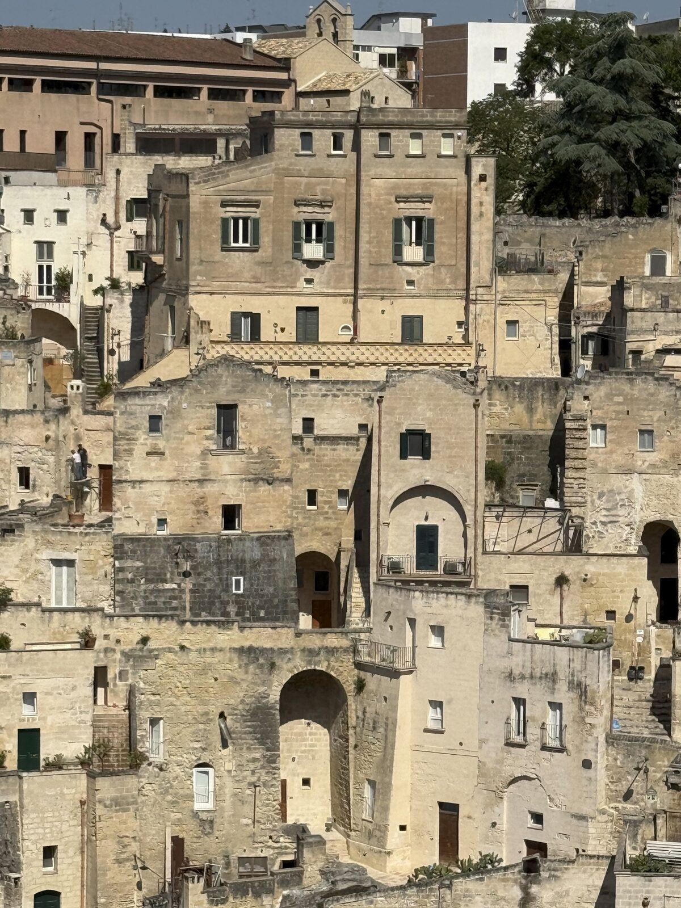
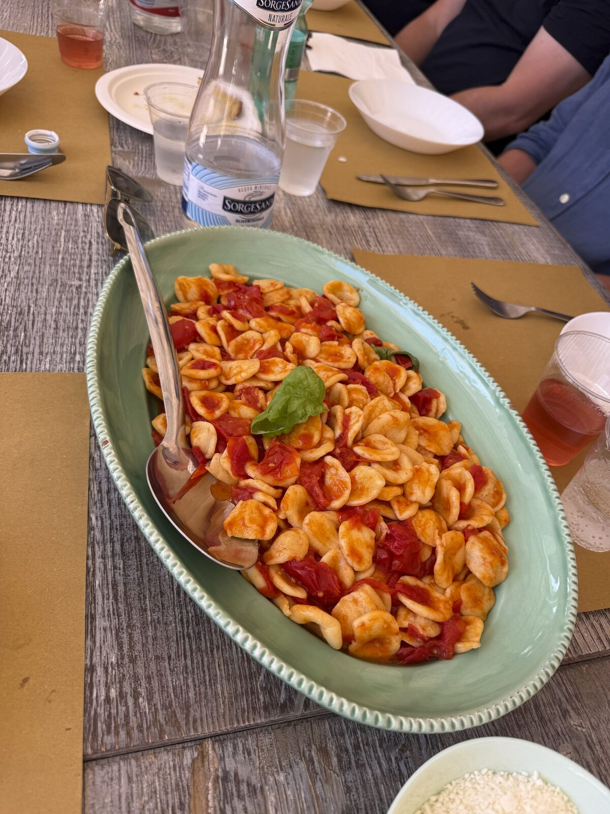
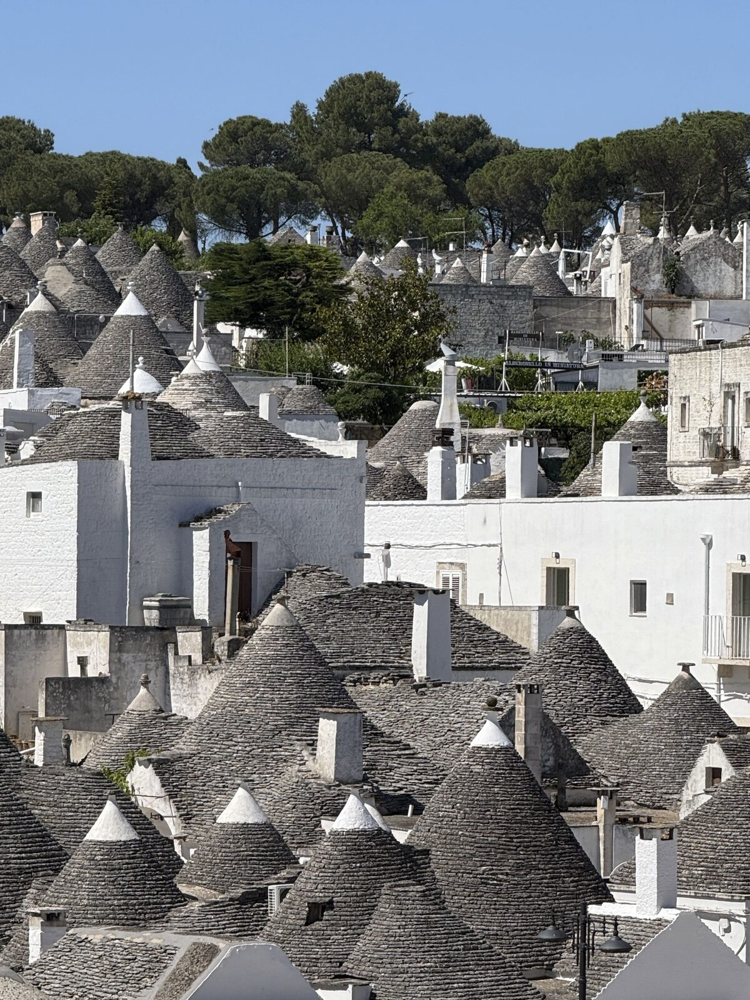

Three weeks in Puglia
Flew into Bari and rented a car — about 1 hr 30 min to the villa.

A wonderful villa nestled in a hectare of ancient olive grove, a few minutes from Ostuni’s whitewashed centro storico and the Adriatic coast. Private pool, outdoor kitchen, and the kind of property that makes leaving feel like a mistake.
A day on the beach and a fantastic meal at this restaurant. About 20 minutes from the villa.
Only 6km from the villa. Good food, but way, way too much of it. We were there early in the evening, the only ones at the restaurant — locals started showing up around 9pm as we were leaving.
About 10km from the villa. Only wines from Puglia — we discovered some new favorites. Wine prices in Italy are so reasonable.

A UNESCO World Heritage Site known for its cave dwellings — a beautiful little town. We stayed at Le Malve Cave Retreat, Via Bruno Buozzi 102 (+39 0835 232485, tel/WhatsApp). One full day with an overnight is plenty. Dining at Osteria al Casale, Via Madonna delle Virtù 29, 75100 Matera (+39 329 802 1190).

Masseria Casina Vitale, Strada M.ca, 72013 Ceglie Messapica (+39 0831 383138, masseriacasinavitale.it). Booked through Get Your Guide. A fun, quick day trip about 20 minutes from the villa.

Strolled through the streets of Alberobello and all the lovely trulli. Lunch (unmemorable) in Locorotondo. Spent the afternoon in our favorite little town of Martina Franca, with an afternoon spritz, of course.